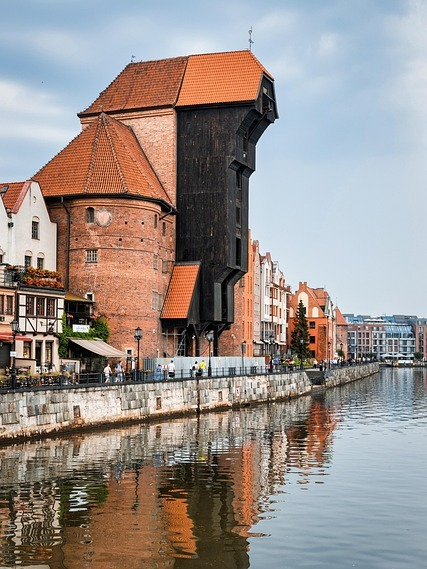
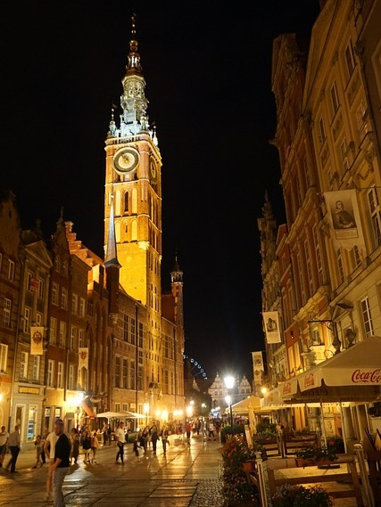

miejsca warte odwiedzenia
NEWSELLER
Kontakt z nami
l.niepodległości 12/2
754 027 112
zwiedzaniegdansk@gmail.com
miejsce 1
Gdańsk, stolica województwa pomorskiego, to historyczne miasto o ponad 1000-letniej tradycji, położone u ujścia Wisły do Morza Bałtyckiego. Jest ważnym ośrodkiem gospodarczym, politycznym i kulturalnym, znany jako "Miasto Wolności i Solidarności" oraz morska stolica Polsk
miejsce 2
Gdańsk, stolica województwa pomorskiego, to historyczne miasto o ponad 1000-letniej tradycji, położone u ujścia Wisły do Morza Bałtyckiego. Jest ważnym ośrodkiem gospodarczym, politycznym i kulturalnym, znany jako "Miasto Wolności i Solidarności" oraz morska stolica Polsk
miejsce 3
Gdańsk, stolica województwa pomorskiego, to historyczne miasto o ponad 1000-letniej tradycji, położone u ujścia Wisły do Morza Bałtyckiego. Jest ważnym ośrodkiem gospodarczym, politycznym i kulturalnym, znany jako "Miasto Wolności i Solidarności" oraz morska stolica Polsk